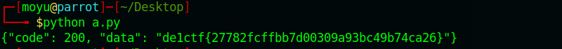
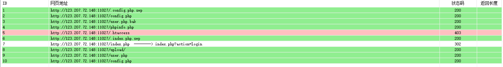
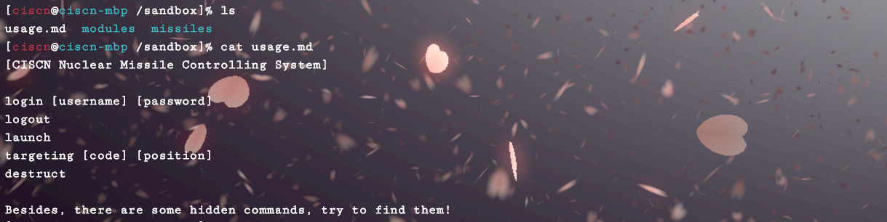

周末看了两天这个比赛，被学长带飞，记录一下
SSRF ME
题目直接给了源码，审一波发现关键在于下边这个函数
1 | def getSign(action, param): |
很明显的hash长度扩展攻击，把scan改成read就可以读文件了
有一个waf
1 | def waf(param): |
禁用了gopher和file协议，但是根据之前p牛提过的一个技巧，可以用local_file协议来读取文件（CVE-2019-9948），最终exp如下
1 | import hashpumpy |
flag如下

ps：据说这题非预期，直接读flag.txt就可以
shellshellshell
这题卡了很久，题目环境也崩了好几次，总之这题做的真的很难受
登录界面很熟悉，和去年的N1CTF很像，扫一下目录

很显然的源码泄露，下下来恢复一下，发现和N1CTF的代码基本一样
找一下writeup，https://xz.aliyun.com/t/2148直接用题里的exp打一下就可以（一开始没意识到，还审了一晚上
但是这个洞还是很值得学习的
进去之后根据题目的提示，需要打内网的机器，找到另一台web服务器，一看代码，去年上海大学生ctf的web题，只需要找个办法传进去数据包就可以，用gopher传，getshell之后就是找flag了，最后在/etc/下面
发gopher包写shell的代码
1 | import urllib |
giftbox
这题当时没看，只觉得前端界面很炫酷，赛后看了出题师傅的wp：https://github.com/impakho/ciscn2019_giftbox 由于题目环境不知道崩没崩，直接在本地搭docker了，搭的是国赛环境，但应该没什么太大区别，在这里复现一下
进去可以f12看到真实的url，/shell.php?a=list&totp=55530902，再结合源码，可以知道totp应该是用来校验的一种手段，暂时先不看，看看有什么功能

有个登录，可以试一下sql注入，根据格式用区分username和password，尝试用绕过空格的方法注入fuzz一下，发现有sql注入
可以根据这个写出布尔盲注的脚本（这个脚本需要先猜一下表名，是我菜了
1 | import requests |
得到密码flag{hi33en_C0mm3nd-sh0w_hiiintttt_23333}，而且带一个隐藏的命令
根据提示，可以知道再launching的时候会执行eval，命令执行
经过fuzz之后，发现限制了参数的长度，而且code只能为数字和字母，position只能为a-zA-Z0-9})$({_+-,.
这里可以使用php的可变变量来执行任意操作，由于有open_basedir的限制，无法读取/flag，需要想办法绕过
这里可以使用一个方法 https://xz.aliyun.com/t/4720 原理应该是php路径展开函数的问题
根据payload写个脚本来获取flag
1 | import requests |